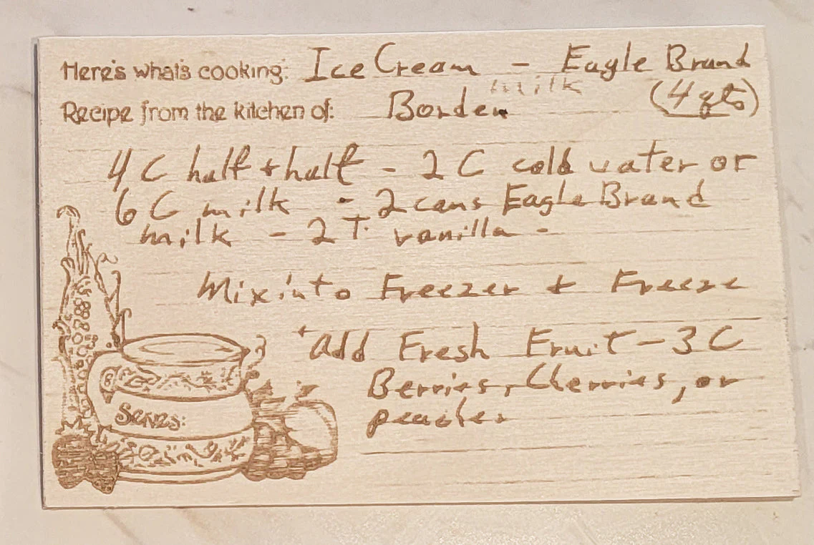

From the kitchen of Borden — makes 4 quarts

Eagle Brand sweetened condensed milk was invented in 1856 by Gail Borden, a Texas land surveyor who became obsessed with food preservation after watching children die of contaminated milk on a transatlantic crossing. His vacuum-evaporation method produced shelf-stable, sugary milk in a can, and it was a game-changer for the Union Army during the Civil War — soldiers got safe milk in their coffee for the first time. After the war, Borden's company spent decades publishing recipe pamphlets to teach home cooks what else condensed milk could do: it turned out to be a near-perfect base for fudge, key lime pie, magic cookie bars, and homemade ice cream, because its high sugar content prevents ice crystals from forming as it freezes.
That's exactly what's happening here. With no eggs, no custard tempering, and no churning beyond what a hand-crank or electric freezer does, the two cans of Eagle Brand provide both the sweetness and the smooth texture that you'd otherwise need a French-style custard for. The recipe is essentially a Borden marketing recipe — note "Recipe from the kitchen of: Borden" right at the top — preserved on a laser-engraved wooden card sold as a kitchen keepsake. So it's a delightful three-layer artifact: a 19th-century industrial product, a mid-20th-century home recipe, and a 21st-century craft tribute to both.